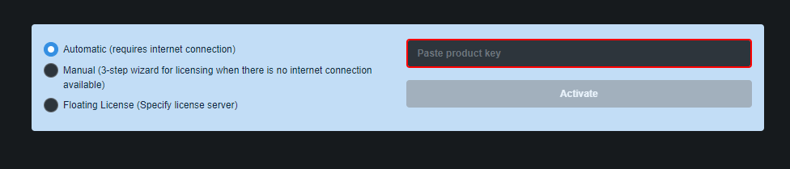
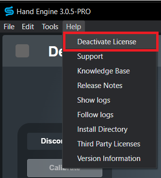

Requirements:
- Active internet connection when the software is being activated.
- Your hand Engine license key, which can be obtained from your account on StretchSense Downloads. If you do not already have an account or your license key is not in your account you can contact our Support team at support@stretchsense.com.

Automatic Activation
The first time Hand Engine is launched it will open on the activation screen requesting a license key.

Copy and paste your license key into the required box, then click on Activate.
If Hand Engine fails to activate, follow the information from the error pop-up. Contact our Support team at support@stretchsense.com if you are unable to activate your license.
NOTE: You can only activate your license on one computer at a time.
If you would like to activate your license on another computer, you will have to deactivate it from the first computer by going into Help -> Deactivate License in the top left menu in Hand Engine.

If you are unable to access the computer where Hand Engine was initially activated, please contact our Support team at support@stretchsense.com to deactivate it remotely for you.